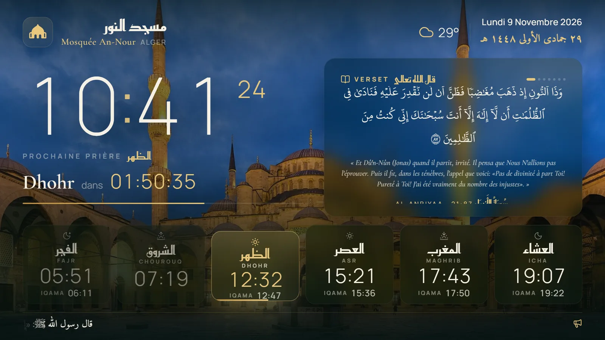
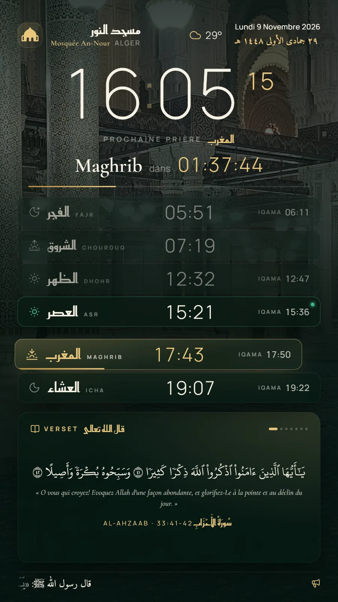
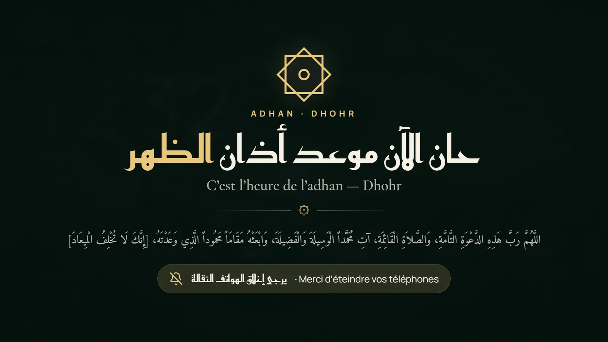
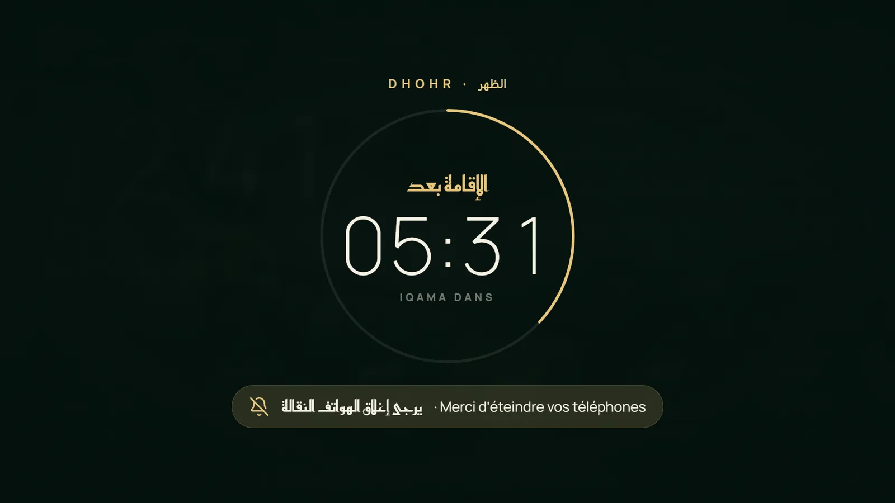
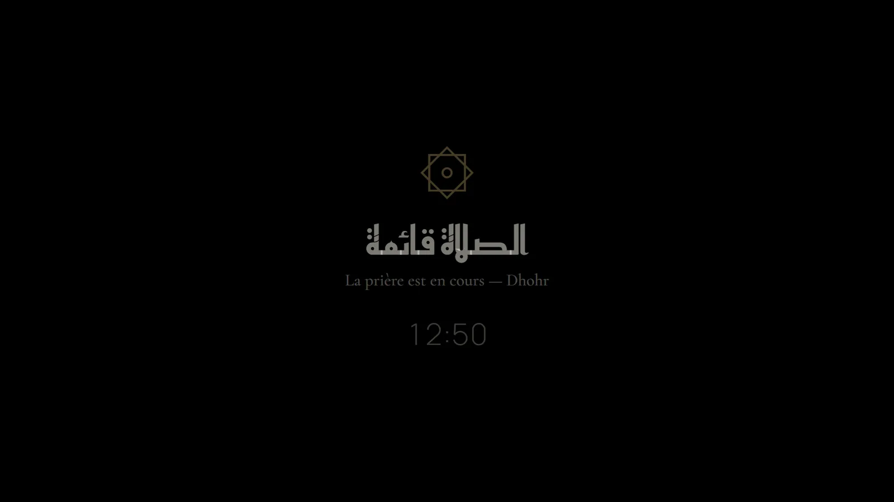
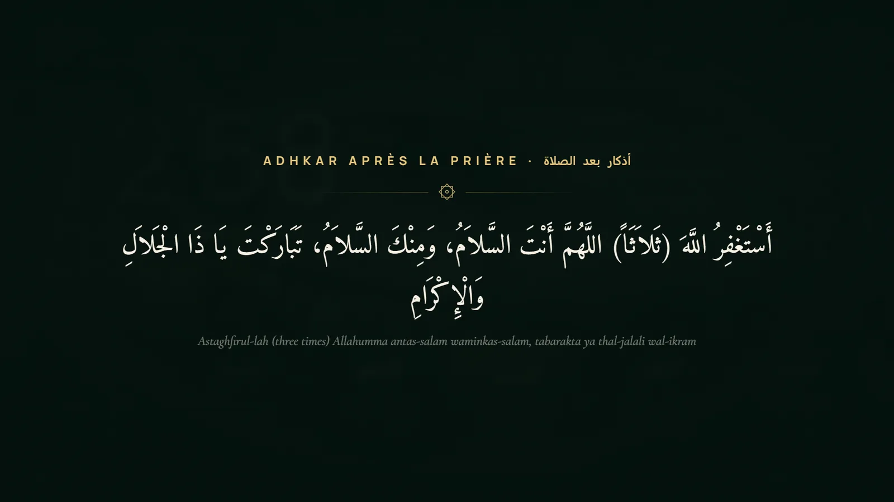
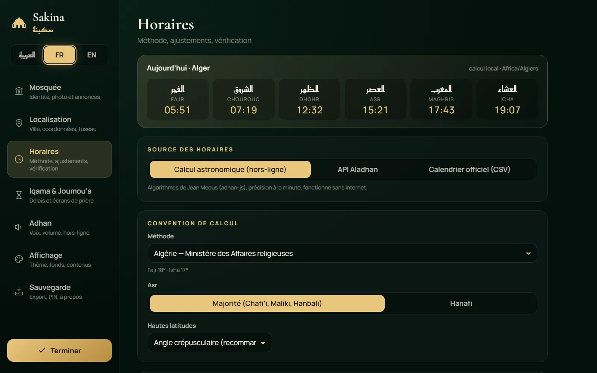
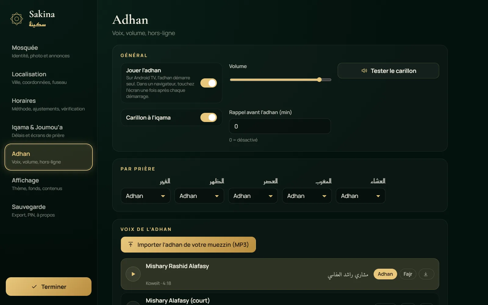

Horaires exacts
Calcul astronomique précis selon la position exacte de la mosquée, 20 conventions nationales et ajustements à la minute près.
L’écran de prière premium pour votre mosquée, votre salon et votre Android TV. Horaires précis à la minute, iqama, adhan, versets et adhkar — beau, fiable et léger, même sur une TV modeste.


Calcul astronomique précis selon la position exacte de la mosquée, 20 conventions nationales et ajustements à la minute près.
20 voix (La Mecque, Médine, Mishary Alafasy…), un adhan distinct pour Fajr, ou le MP3 de votre propre muezzin.
Délai après l’adhan ou heure fixe, par prière. Compte à rebours plein écran, rappel d’éteindre les téléphones.
Coran en écriture Uthmani avec traduction, adhkar authentiques de Hisn al-Muslim, et adhkar après chaque prière.
Nom, logo, photo de la mosquée en fond d’écran, annonces et bandeau défilant, horaire de la Joumou‘a.
Calendrier Umm al-Qura avec correction locale, changement de jour au Maghrib, Imsak et Iftar affichés pendant Ramadan.
Aucun framework, mode léger automatique, s’adapte au paysage comme au portrait. Fluide sur une box Android d’entrée de gamme.
Toute la configuration au pavé directionnel, code PIN, export/import pour cloner la config sur plusieurs écrans.

L’appel retentit à l’heure exacte, avec l’invocation qui suit l’adhan.

Grand compte à rebours, rappel des téléphones, puis « alignez les rangs ».

L’écran s’assombrit pour ne pas distraire. Durée spéciale pour la Joumou‘a.

Les adhkar après la salat défilent, puis retour au tableau de bord.
Photos de mosquées du monde entier sous licence libre — de Djamaâ El-Djazaïr à Ispahan — ou la photo de votre propre mosquée.
Trois sources au choix, et des tests automatiques qui comparent chaque version à des horaires de référence.
Algorithmes de Jean Meeus (adhan-js). Fonctionne pour toujours, même sans internet. Choix par défaut.
Calendrier mensuel synchronisé et mis en cache pour deux mois : l’écran continue en cas de coupure.
Importez le calendrier de votre ministère, fédération ou mosquée pour l’appliquer à la lettre.
| Ville | Méthode | Écart |
|---|---|---|
| Alger · Constantine · Tamanrasset | Algérie | ≤ 1 min |
| Tunis | Tunisie | ≤ 1 min |
| La Mecque | Umm al-Qura | ≤ 1 min |
| Le Caire | Égypte | ≤ 1 min |
| Istanbul | Diyanet | ≤ 1 min |
| Paris · Londres · Montréal | UOIF · MWL · ISNA | ≤ 1 min* |
| Kuala Lumpur | JAKIM / MUIS | ≤ 1 min* |


L’expérience complète pour les mosquées : écran toujours allumé, adhan sans aucune intervention, redémarrage automatique après une coupure de courant.
Sur un PC relié à un écran, une tablette ou un téléphone. Installable comme une application, fonctionne ensuite sans internet.
Sans Android ? Ouvrez la version web dans le navigateur de la TV et ajoutez-la aux favoris. Le mode léger s’active automatiquement.
Hébergez votre propre version, adaptez-la à votre fédération ou contribuez au projet.
Le code est public et le restera. Traductions, conventions nationales, calendriers officiels, voix d’adhan libres de droits : chaque contribution compte.
Oui, entièrement : pas de publicité, pas d’abonnement, pas de compte. Le code est sous licence MIT.
Non. Les horaires sont calculés sur l’appareil. Internet sert uniquement à la météo, à la synchronisation Aladhan (optionnelle) et à télécharger les voix d’adhan une première fois.
Choisissez la convention de votre pays, puis ajustez chaque prière à la minute près si votre mosquée applique une marge de précaution. Vous pouvez aussi importer le calendrier officiel en CSV.
N’importe quelle box Android TV / Google TV récente (même d’entrée de gamme) branchée en HDMI convient. Sakina démarre seul avec la box et garde l’écran allumé.
Oui : importez son enregistrement MP3 dans Réglages → Adhan. Il est stocké sur l’appareil et fonctionne sans internet.
Configurez un écran, exportez la configuration (.json) puis importez-la sur les autres. L’écran vertical de l’entrée est géré automatiquement.